Lab weeks
Labweeks project: Artificial Creatures | Gelly Robot
Voor ons Lab Weeks project ging ik samenwerken met Aref Akminasi. We hadden besloten op een handgel robot te maken.
Van te voren hadden wij al besloten om de taken een beetje te verdelen zodat we niet alleen efficiënt werken maar ook gebruik maken van elkaars sterke kanten.
In dit geval was Aref vooral bezig met de code kant van de Gelly robot en ik met het ontwerp.
Hieronder is te zien, hoe de afgelopen 9 dagen (zonder het weekend en de expo) zijn gegaan.
Het volledige verslag kan je hier bekijken
Dag 1
Op dag 1 hadden we al een concept, wat we gingen doen. Dit concepten gingen voorleggen aan de docent voor feedback maar het kon beter dus zijn we weer terug gegaan naar het brainstormen van nieuwe ideeën. De feedback die we voornamelijk ontvingen was dat het niet Artificial Creature genoeg was.
Op internet is inspiratie opgedaan naar andere projecten om weer verder te brainstormen en hoe we het concept ontwerp gaan aanpakken. Er zijn een aantal behulpzame linkjes gevonden. Automatic hand sanitizer using arduino en Automatic Soap dispenser Using Arduino
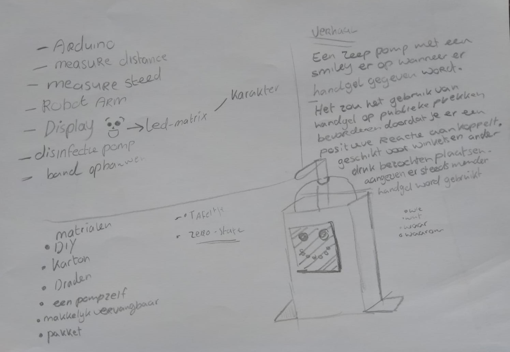Tijdens het brainstormen kwamen we uit op concept 1.2. Een soap dispenser die automatisch zeep/gel uitdeelt aan mensen door middel van een sensor. De Zeep- Face is een pomp met een LED smiley er op waarbij je wanneer er handgel uitgegeven wordt je een blij gezichtje krijgt
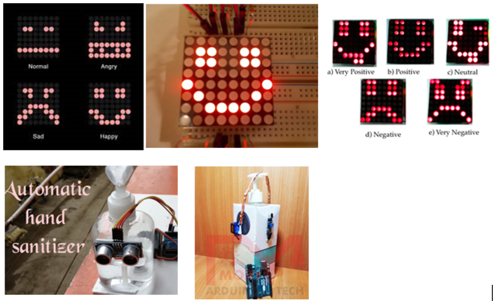Dag 2
Op dag 2 zijn we het concept van dag 1 verder gaan uitwerken. We zijn na het bespreken van wat de robot gaat doen, hoe het in elkaar zit en wat het nodig heeft op de conclusie gekomen dat het beter is om het aan te sluiten op een powerbank in plaats van een laptop zodat je het overal kan plaatsen.
Verder zijn we ook begonnen met een planning te maken, de arduino code en het ontwerp voor de robot.
Voor het bedenken van het ontwerp werden er al een paar ideeën bedacht zoals dat het een kartonnen doos moet zijn omdat we dat al thuis hadden liggen en dat je die makkelijk kan verbouwen.
Een ander idee was dat er een uitsnede moet zijn bedekt met doorzichtig plastic of boterhamzakje zodat je in de doos kan zien hoeveel handgel er nog is.
Verder moest er een gat komen voor een bakje waarin de powerbank en de arduino in liggen.Met een houten plankje zouden de arduino en de powerbank gescheiden moeten zijn zodat als de powerbank warm wordt, het geen effect heeft op de arduino.
De motor en het breadboard zou aan de binnenkant geplakt worden voor het gemakt van de bedrading
Het ontwerp werd eerst uitgetekend op grid-papier. Op het papier werd een voor,achter en zijkant uitgeschetst. Vervolgens werd het gemaakt in 3d op isometrisch papier. Dit is om een visueel beeld te krijgen voordat we gaan beginnen om eventuele foutjes te voorkomen en inzicht te krijgen op hoe de robot eruit komt te zien.
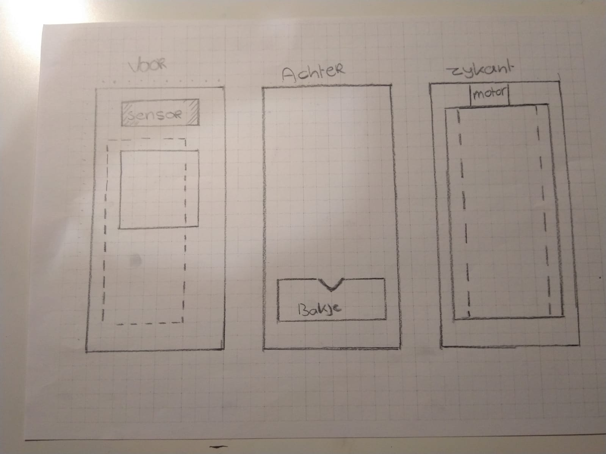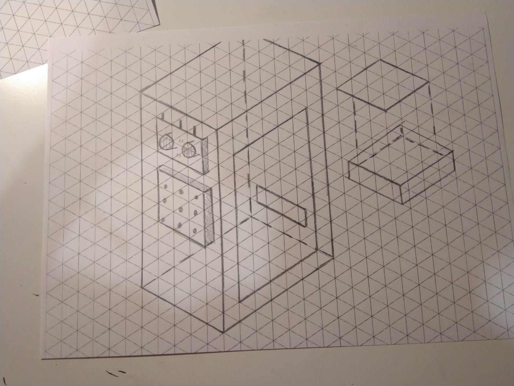
Toen we de schetsen klaar hadden kwamen wij er achter dat het handiger zou zijn als de sensor onderaan was en de LED-matrix onderaan omdat je, je had onderaan zet om de gel te ontvangen. Er moest opnieuw een schets gemaakt worden.
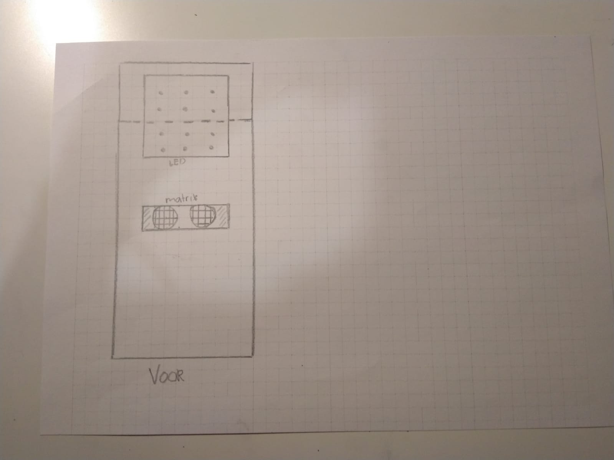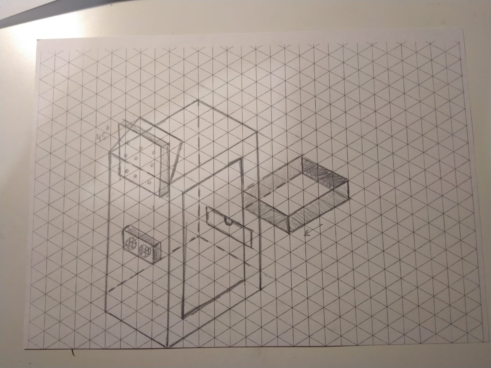
Dag 3
Op dag 3 gingen we verder waar we gebleven waren. Dit is het verder uitwerken van het concept en de arduino code.
Voor het verder uitwerken van het concept hebben wij een grote powerbank besteld, want die wij thuis hadden was gaf niet te lang energie,
Dit besluit is genomen omdat het product straks in een omgeving komt waar hij uren lang moet blijven werken.
Behalve de technische taak, heeft de creature drie andere eigenschappen:
- Een motivatie element voor het gebruik
- Een emotie element (blij, verdrietig, bedankt)
- Een feedback element voor het slagen/zakken van de taak
Dag 4
Op dag 4 hebben wij opnieuw het concept concreter gemaakt, gewerkt aan de arduino code en zijn we begonnen met het maken van het ontwerp.
Nu we een goed concept hebben kunnen we beginnen met het in elkaar zetten van het ontwerp. We hebben de afmetingen genomen van de belangrijkste materialen die we nodig hebben,
dit zijn de powerbank en de handgel. De afmetingen zijn genomen zodat we rekening kunnen houden met hoe groot het ontwerp wordt en wat we misschien er bij moeten kopen.
Verder zijn we van plan om ook onder andere dubbelzijdige tape te kopen, contactlijm, doos met tissues (voor het karton) en cadeau papier zodat het uiterlijk een geheel krijgt.
Ook is er gekeken naar wat voor doos het wordt aan de hand van de papieren schetsen voor een template. Dit is gedaan door te zoeken op verschillende verpakkings templates en daarna uit te printen en zelf in elkaar te zetten. Om te zien waarop je moet letten als je een ontwerp maakt die je daarna in elkaar moet zetten.
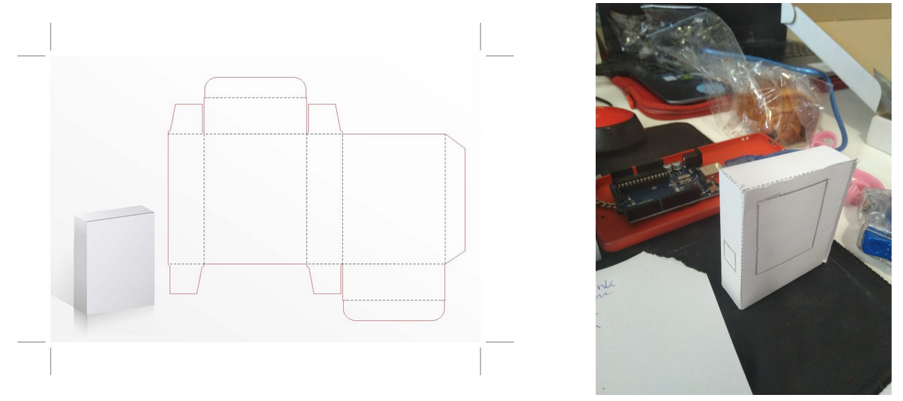Dag 5
Wij hebben vandaag een ontwerp bedacht, en ook meer aan de code en de functionaliteiten gewerkt.
En is er verder gegaan met het ontwerp van de robot.
Om inspiratie te krijgen voor hoe we dit nieuwe concept gaan ontwerpen is er gekeken naar andere ontwerpen met karton op internet.
Een nieuw ontwerp! \(0.0)/
Na het testen van de arduino code kwamen we tot de conclusie dat het ontwerp/ lay-out een beetje aangepast moest worden want de motor die het pompje drukt voor de gel is te zwak. Na het brainstormen en uitproberen van alternatieven zijn we op een oplossing gekomen. De oplossing waarop we zijn gekomen is dat we met de handgel fles ondersteboven en een seringe de handgel eruit moeten laten komen via een tube.
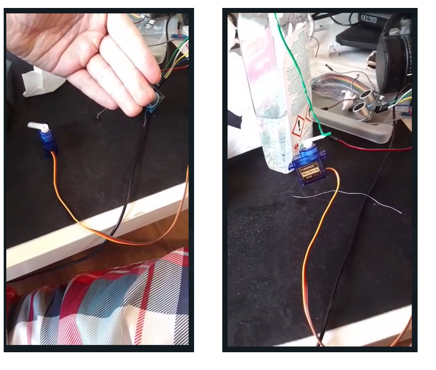Met het nieuwe ontwerp was het lastig om een visueel beeld te krijgen en te tekenen op papier. We zijn dus een beetje gaan brainstormen, spelen en testen met de materialen die we tot onze beschikking hadden, en kwamen op een aantal verschillende lay-outs. Uiteindelijk kwamen we op een lay-out waarmee we verder konden werken.
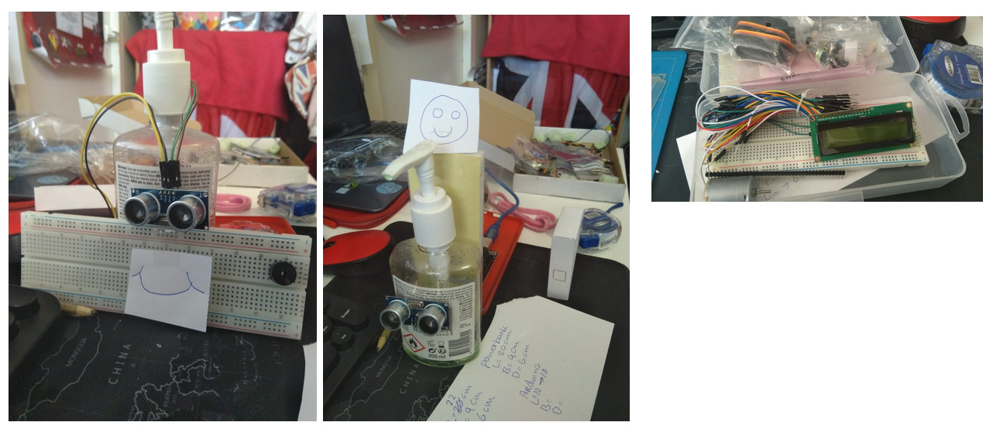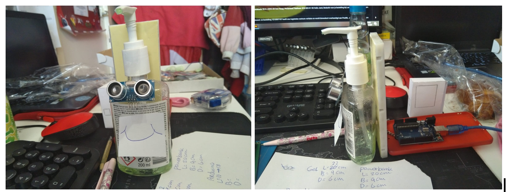
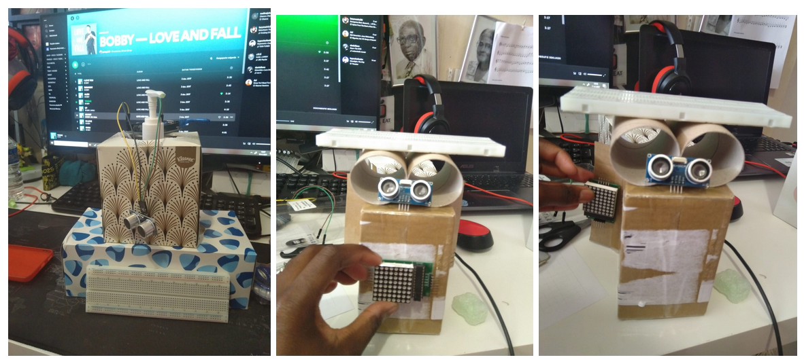
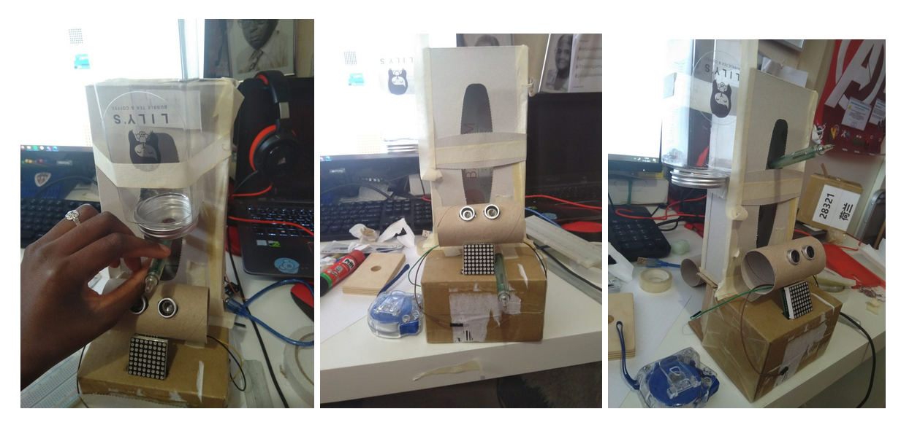
Dag 6
Een eerste prototype gemaakt. Wij gaan verder nadenken over hoe de huidige status van het systeem zijn handelingen kan beïnvloeden.
Dag 7
Op dag 7 hebben we toen we naar school moesten alles bij elkaar gezet, zowel de code als het ontwerp voor het definitieve ontwerp. Het ontwerp is ingepakt voor een leuk design maar er waren wat probleempjes met de lay-out van de sensor en het spuitje dus nu kijken we naar een oplossing.
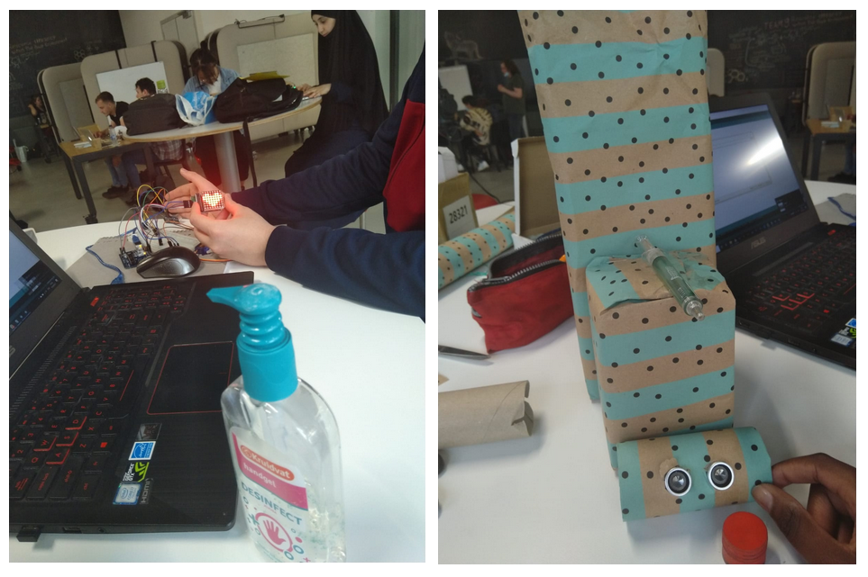Aangezien we op school waren en het nogal lastig was om de spullen mee te nemen naar huis zonder dat er kans was dat er iets stuk ging, besloten de robot nog niet vast te maken aan elkaar en in losse onderdelen mee naar huis te nemen.
De naam Gelly \(n.n)/
Nu alles langzaam bij elkaar begon te komen, bedachten we dat we een naam voor onze robot nodig hadden. Na wat heen en weer gaan met namen kwamen we op definitieve naam “Gelly” omdat onze robot om handgel gaat. Daarbij hadden we ook een motto bedacht die past bij de robot zijn functies en doel. Het motto is “Maak gelly blij”.
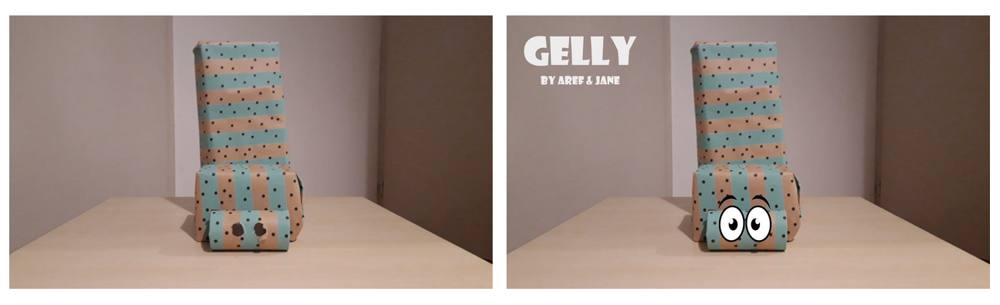Dag 8
Op dag 8 zijn de laatste stappen van de code gezet en meer functies erin gezet zodat de creature stemming ook een effect heeft op zijn handelingen.
Ook zijn we begonnen met de verslaglegging voor het portfolio.
Het volledige verslag kan je hier downloaden
Dag 9
Op de laatste dag voor de expo zijn nog even de puntjes op de i gezet. Dit zijn het eindproduct in elkaar zetten,
het concept kort omschrijven voor de expo presentatie en een video maken om te presenteren.
In het eindproduct is nogmaals gekeken naar de lay-out van Gelly. Er zijn toch een paar last-minute veranderingen gemaakt vanwege de bedrading.
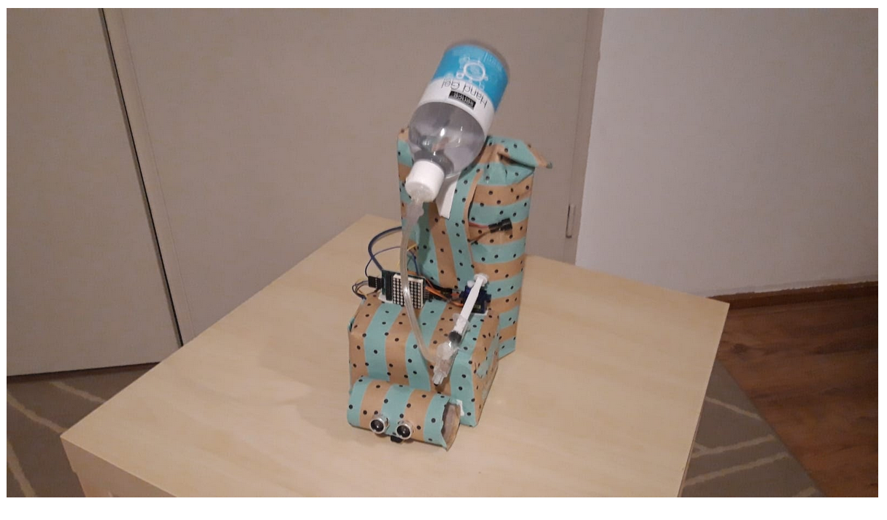
D-Day: EXPO !!
Gelly is een handgel robot met emoties die leiden tot verschillende acties waarop ze handgel aan je geeft. Via de arduino code krijgt ze verschillende stemmingen.
Als je haar gebruikt dan wordt ze blij anders niet. Dit is te zien met de LED-matrix. Net een huisdier dus “Maak gelly blij”.
Bekijk het eindproduct op Youtube
Gelly werkt als volgt:
Aan het begin van de dag (bij het aanzetten) krijgt onze creature een stemming,
die is elke keer anders (De stemming wordt altijd aangetoont op de matrix).De frequentie van gebruik verandert de stemming en het gedrag.
Meer gebruiken maakt hem meer blij, minder gebruiken maakt hem verdrietig. Hij gaat ook dingen vanuit zichzelf doen
(bijvoorbeeld rare geluiden maken als hij boos is) dat gebeurt ook met willekeurige maten, dus niet precies elke seconde of elke 10 seconden,
het is soms vaker soms minder vaak. Het gedrag is ook afhankelijk van de stemming (zoals een huisdier).
Reflecteren
Ik vond de aflopen weken van de labweeks wel goed gaan. De samenwerking met Aref ging soepel omdat we een duidelijk plan hadden.
Er werd goed gecommuniceerde via whatsapp als er iets tussen kwam of als we tegen problemen aan liepen.
We wisten waar we beide goed en mindere goed in waren, dus hadden we allebei genoeg te doen in de takenverdeling.
We bespraken goed de planning en de oplossingen voor problemen, ik ben erg te vreden. Daarbij was de Eindexpo inspireerd om te zien.
Vooral wat voor andere variaties van Artificial Creatures (robots) andere studenten hadden gemaakt.
Het enige wat misschien beter kon was dat mischien langer de tijd krijgen dan (minder dan) 2 weken om de robot beter uit te werken.